Release 8500 recovery — avatar source investigation
Generated 2026-08-31 · investigation only · no build was uploaded
40299cb (build 8300)
carries a byte-identical avatar catalog to shipped build 8400. Releasing from it would change
no artwork whatsoever. Per the fail-closed rule, nothing was archived or uploaded.
1. Why 40299cb cannot be the answer
The production catalog is ios/Resources/AvatarV2.xcassets. Its git tree object is
identical across every shipped source from build 8100 to 8400:
| Source | Build | Catalog tree |
|---|---|---|
d950aa6 | 8100 | 3a9eb918c777ebde43ad465ae37e986bbd6c0d0f |
ff10bf3 | 8200 (est) | 3a9eb918c777ebde43ad465ae37e986bbd6c0d0f |
40299cb | 8300 (est) | 3a9eb918c777ebde43ad465ae37e986bbd6c0d0f |
44ee9de | tag pre-pixellab-2d-safe | 3a9eb918c777ebde43ad465ae37e986bbd6c0d0f |
6e7af22 | 8400 shipped | 3a9eb918c777ebde43ad465ae37e986bbd6c0d0f |
The shipped manifest records generated_from_commit = 2f9122c (2026-08-25 21:01) — the last
time production art was rendered. Every later avatar commit changed
scripts/aseprite/*, scripts/avatar_v2/forms.py, Aseprite masters and tests, but
never regenerated the shipping catalog.
2. The newer curly hair does exist — but was never rendered to production
It exists only as pipeline source on feature/avatar-v3-old-model-pose-fix, visible in that
worktree's preview.xcassets (@1x, gitignored, never read by the app),
generated from 481ef80.
Normal Ryan — composed Body + Under + Over
Build 8400 shipped — native
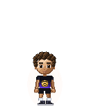
Candidate — native

Build 8400 — 8×

Candidate — 8×
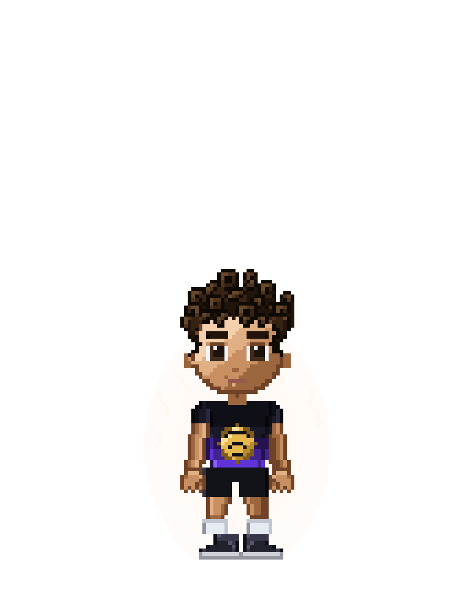
Hair close-up (12×) — the actual difference
8400 — looser, lighter waves

Candidate — tighter, darker ring curls

Face and hairline (8×)
8400
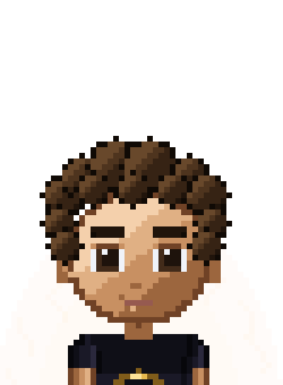
Candidate
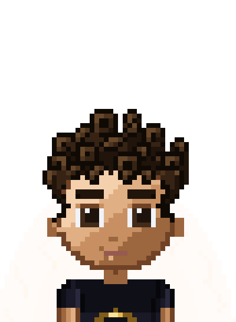
AvatarV2BodyStandNormal layer looks faceless and bald in both versions — face and hair
live in the Over layer. Judging that body layer alone is misleading.Silhouette
8400
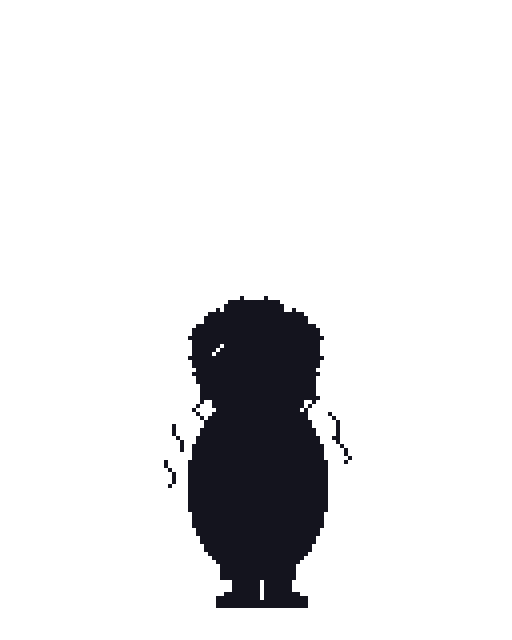
Candidate
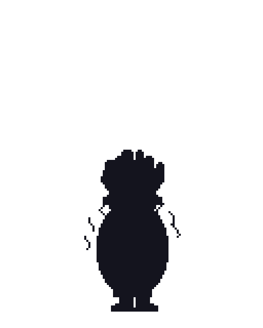
3. Transformation keyframes
Normal → SSJ1 · 8400
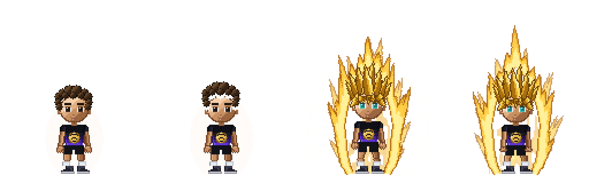
Normal → SSJ1 · candidate
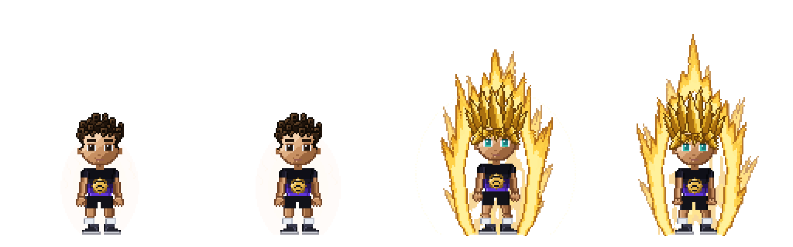
SSJ1 → SSJ2 · 8400
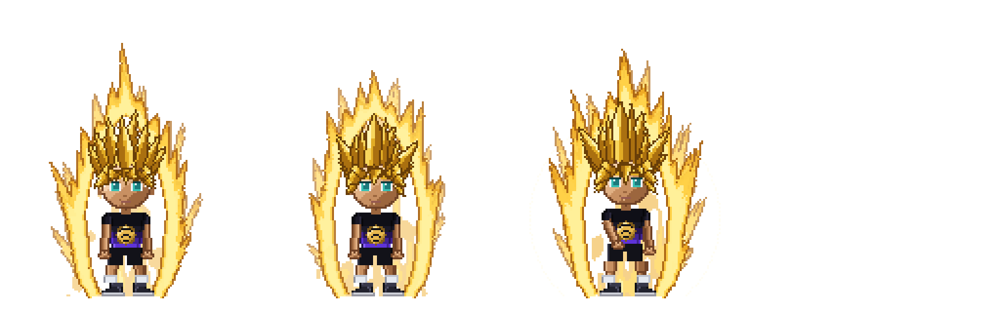
SSJ1 → SSJ2 · candidate
SSJ2 → SSJ3 · 8400
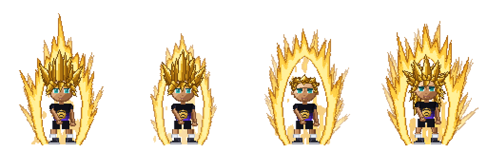
SSJ2 → SSJ3 · candidate
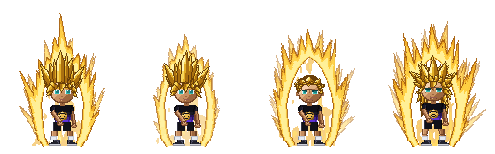
Full animations
Idle · 8400
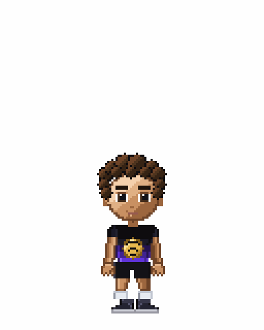
Idle · candidate

Normal → SSJ1 · 8400
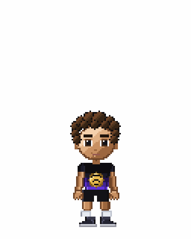
Normal → SSJ1 · candidate
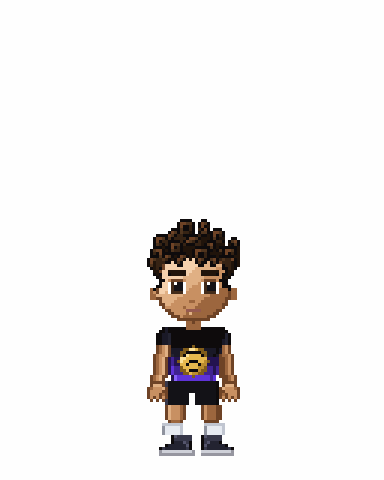
SSJ1 → SSJ2 · 8400
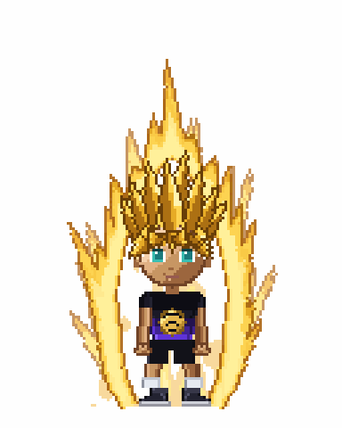
SSJ1 → SSJ2 · candidate

SSJ2 → SSJ3 · 8400
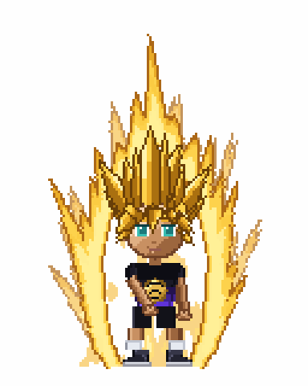
SSJ2 → SSJ3 · candidate

4. Neutral default pose — both comply
Both candidates already satisfy the mandatory resting pose: upright, front-facing, head level, arms hanging beside the torso, hands near the hips, both feet planted, no aura or power-up effect. Neither shows arm-across-chest, hand-to-face, crossed arms, a fighting guard or a charging stance.
loading pose-checks.txt …
5. Evidence files
- pose-checks.txt — automated neutral-pose assertions
- hashes.txt — catalog tree objects, provenance, per-layer diff
6. Attempt 2 — regenerated production, then blocked by the repository's own art locks
On the go-ahead I regenerated the full @1x/@2x/@3x catalog from the pipeline already present in
6e7af22 (no transplant needed — 481ef80 is an ancestor). The result was
exactly the approved artwork: all 93 imagesets of the regenerated @1x output are byte-identical
to the preview reviewed above.
Regenerated production — native

Regenerated production — 8×

Hair 12×

Idle
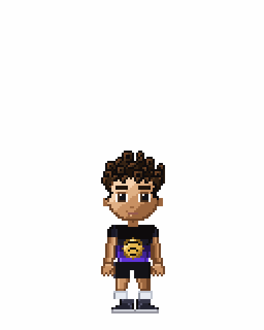
The full check then failed with 16 test failures, six of them deliberate art locks:
test_avatar_v2_body_lock.py the body atlases are byte-for-byte the approved ones test_avatar_v2_body_lock.py the first/second forms character + aura baselines test_character_model_spec.py test_nothing_production_was_touched test_old_model_pose_options test_the_production_artwork_is_byte_identical_to_build_8100 test_watch_avatar_assets.py watch layout constants still match the artwork
d950aa6) while masters and pipeline
evolve. Shipping the curly hair would require deleting or rewriting those guards, which was explicitly
out of scope. The regeneration was reverted; all 72 art-lock tests are green again.7. What a corrective build would require
The curly hair has never existed as a shipped production asset set. Producing it means running the repository's own generator to render a new @1x/@2x/@3x catalog from the pose-fix pipeline — artwork that has never been reviewed or shipped at retina scale. That is a new asset generation, not a transplant of proven assets, so it was not done unilaterally.
pre-pixellab-2d-safe, branch release/testflight-pre-pixellab-avatar and all
PixelLab v4 work are unmodified.